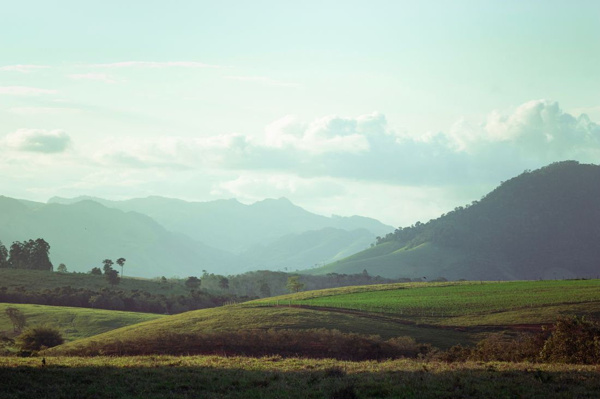
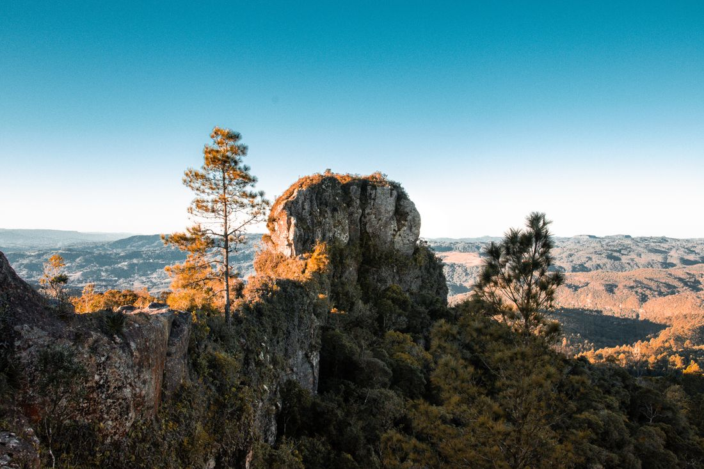

Suíte casal
Estrutura, capacidade e inclusões ainda não confirmadas.
Consultar interesse ↗
Imagine dias sem pressa, cercados pela ideia de paisagem e céu aberto. Esta é uma proposta visual fictícia de estadia tranquila.
Explorar uma estadia ↗Recanto das Pedras é uma demonstração de como poderia se apresentar uma hospedagem de descanso em Serra Negra. A atmosfera vem de imagens de referência, sem representar um espaço existente.
Conhecer o conceito ↓
Paisagem de referência. Não é o terreno nem a vista da pousada fictícia.A fotografia sugere o clima da proposta, sem fazer promessas sobre a vista ou localização exata. Uma prévia honesta começa pela diferença entre inspiração e realidade.
As categorias abaixo são conceituais. Fotos do espaço, capacidade, inclusões e tarifas ainda precisam ser confirmadas.
Estrutura, capacidade e inclusões ainda não confirmadas.
Consultar interesse ↗Converse sobre datas sem assumir tarifa ou disponibilidade.
Consultar interesse ↗Antes de publicar, esta área precisa de imagens verificadas da hospedagem, junto a capacidade, endereço e inclusões reais.
Informe uma intenção de estadia e prepare uma mensagem de consulta. Nenhum quarto, tarifa ou reserva é confirmado nesta demonstração.
Demonstração fictícia. Não existe pousada nem inventário; nenhuma reserva será recebida.